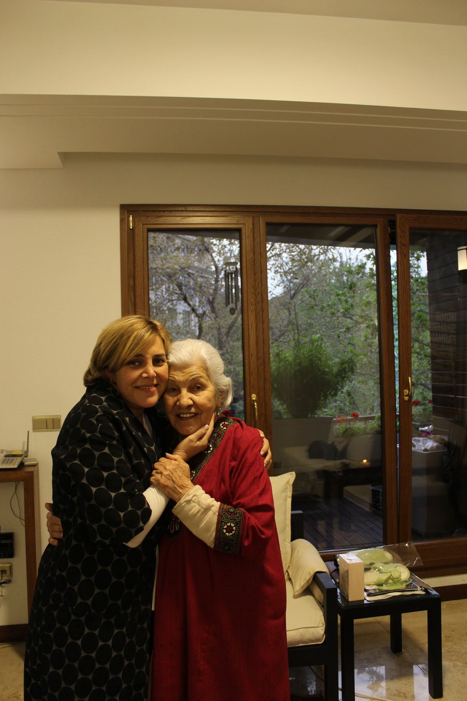
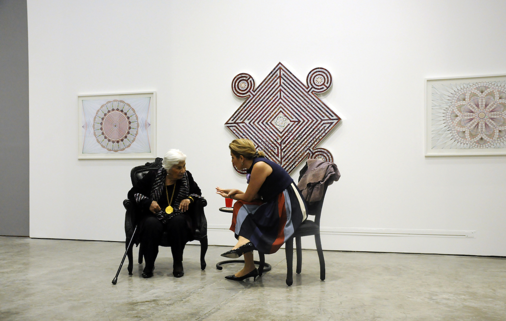
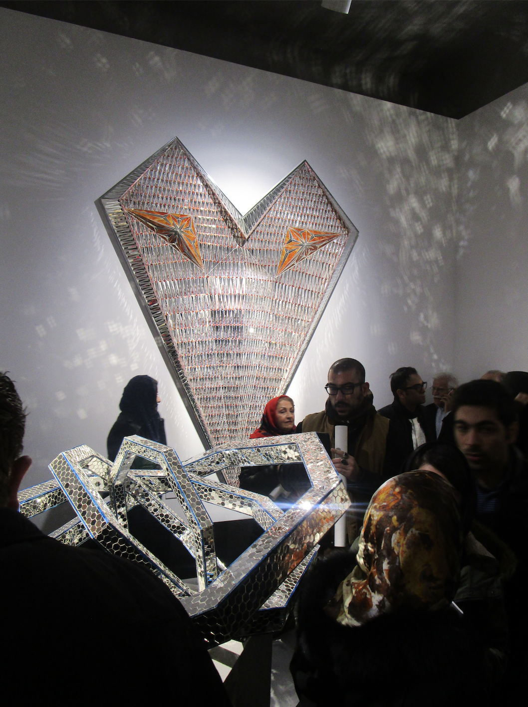
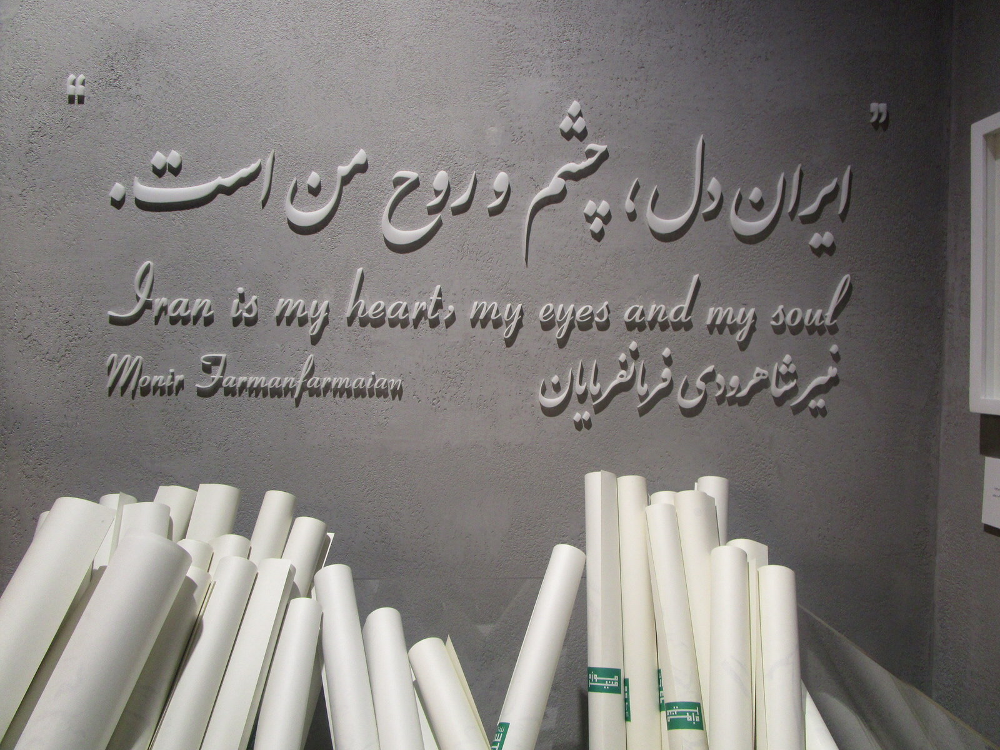

In the second of the two-part series on Monir Farmanfarmaian, Myrna Ayad trails the artist’s return to Iran, global recognition, museum retrospecgtives, and her final wish: a namesake foundation
Ah, Shiraz. City of poets, literature, wine and flowers. It’s not surprising that Monir was cast under a spell; Shiraz has this effect. I know, because I’ve been. The city’s karma is contagious, the air carries an enchantment, but also the scent of blossoms. The Shirazis are a laid-back, delightful, happy-go-lucky bunch. Wherever one looks, there is beauty – in the colourful tiles of homes and mosques, in the manicured lawns and gardens, in a fine tune in the wind, Shiraz is a dream.
Monir and her friends walked into the Shah Cheragh monument and mosque, and somewhere between what felt like sitting within a diamond, observing people in prayer, and taking in all that colour and light, something clicked within Monir. She wanted to bring that majesty into people’s homes, and she quickly discovered that it was divine geometry married to history, but that she could ‘Monir-ify’ it in a contemporary execution. This was a 16th-century technique (aineh-kari) that she was modernising, so-to-speak.

I’m sure that her study of Islamic geometry was akin to a soul search of sorts. I think she found herself, and her creative output for decades to come was both an understanding of oneself, but also an attempt to enlighten others. It’s almost ironic but wonderful all the same that her name – Monir – means shining in Persian. And even with the most complex mirror mosaic sculptures that she created, she still started with a drawing. I look at some of them today as maquettes, renderings of sorts. Squint your eyes and you’ll see a structure. I think Monir was an architect too.
What is amazing about her practice is that she didn’t limit herself to a medium or material. I guess that’s what happens when the big idea clicks – it doesn’t matter what form it takes, it can develop in multiple representations. It becomes infinitely possible. She created rugs and etchings, painted on glass, used pastels, felt markers, ink, watercolours, sequins, beads, glitter, and even created memory boxes which she poured all of her heartache and which served as memorials. Monir’s art was her life.
It was a wonderful time to be in Iran in the 1960s and 1970s. The Shah was keen on modernising the country, petrodollars were rolling in, and some were funnelled into the cultural sphere under the benevolent auspices of a Queen who had a sincere passion for the arts. One of Monir’s infamous mirror mosaic disco balls found a home in the Rockefeller collection, she was also commissioned to create two stunning monumental wall pieces for the Intercontinental Tehran (now Laleh Hotel), and a stream of other commissions and shows followed.
Tragedy is of course never far, and she lost two of her life’s greatest loves – her husband and her country. Monir was in New York when the Islamic Revolution swept the nation. She lost her home and all its belongings. I think nothing broke her heart more than to have lost the Persian antiques and artefacts that she had scoured from all over Iran and preserved. I’d visited Iran in 2009, during which time the Tehran Museum of Contemporary Art staged an exhibition of Persian coffeehouse paintings. Over dinner at Monir’s with her delectable fesenjoon (chicken stew with pomegranates and walnuts), she showed me museum exhibition catalogues of those very same coffeehouse paintings that I’d seen earlier that day in TMoCA. She told me she’d complained to TMoCA to no avail, but was amazingly happy to know that at least they are in good custody.

After a cancerous battle, Abol passed in 1991. Time and grandchildren kept Monir going, but the pull of Iran after years in the US allowed a new mission (she had visited in 1992 and moved permanently in 2002). She was a 78-year-old woman going back home – what home? – alone.
The shining shine, don’t they? Monir staged a major retrospective at Tehran’s Niavaran Cultural Centre in 2006, followed by a show at the Leighton House Museum in London in 2008. Books, gallery and museum shows, and public commissions around the world followed. When I visited her in 2009, she was working on a commission for The Met, and in between asking me about my love life (she was relentless), calling for tea, and giving her assistants instructions on the piece, spontaneously suggested that I take a look. I’d never actually seen a Monir work being made and was astounded with the level of detail and titanic effort. “Go on Myrna joon, put some mosaics in there,” she urged. And so, I did. It’s a memory that makes me smile.

In 2008, I was editor of Canvas, a magazine that focuses on visual art from the Middle East, and we’d put together an exclusive collectors programme for the Abu Dhabi Art fair under the patronage of HH Sheikha Salama bint Hamdan Al Nahyan, wife of the Crown Prince of Abu Dhabi, HH Sheikh Mohammed bin Zayed Al Nahyan, and who established a namesake foundation focused on the arts, healthcare, and childhood development. Monir’s work was in the Al Nahyan collection, and by now, widely collected. She continues to be represented by The Third Line, which propelled her career.
She was invited to the collectors programme and one night, as we sat on the waterfront of the newly opened Emirates Palace, asked the waiter for vodka with pomegranate juice. He shyly said it wasn’t available and was almost apologetic to the old lady. She looked at him very matter-of-factly and said, “This is a 7-star hotel and I expect 7-star service. Please get me the drink as I ordered it.” He did.
I remember her enormous amount of energy then. She wanted to do more and felt relentless. It was admirable – here’s an octogenarian artist who is quite literally restarting her career — and doing so with such gusto. Way back then, she dreamt of showing at the Guggenheim, like it would be the climax of her life’s work. I remember reading her utterly brilliant memoir, A Mirror Garden, about her walks past the Guggenheim New York when she wondered if she would ever show there. And she did, in 2015, becoming the first Iranian and among a handful of women celebrated at the institution.
She wanted more, always feeling indebted to Iran. She would joke and say, “Really Myrna joon, this is it, it’s all I want, a museum here in my country.” It reminded me of the very last couple of lines in her memoir – “I have work to do. And I think it will suit me to do it in Iran, where the earth smells so good after a rain.”
It was December 2017, and I flew to Tehran for 24 hours for the museum’s opening. I remember standing in a hall at the Negarestan Park Gardens packed with enthusiasts and listening to speech after speech in Persian. I looked at a few people seated close to Monir, clearly VIPs – they were older, aristocratic-looking men and women, smartly dressed and with such an air of refinement about them. The men held their carved canes with ivory animal heads, a silk scarf around their necks, and wore bone-rimmed eyeglasses; the women covered their heads with beige shahtoosh headscarves, through which giant diamond studs could be seen against delicate facelifts. Instantly, I recognised them from the research I had done on the art scene during the Pahlavi regime: these were Iran’s old guard, patrons who supported the arts, and here they were now, gathered to celebrate one of their own.
Upon entrance to the museum – Iran’s first dedicated to a woman – the wall text reads: “Iran is my heart, my eyes and my soul – Monir Farmanfarmaian.” Everything was shining.

When I saw Monir last June at her home, she was extremely alert, recalling minute details, making cheeky comments in parallel with a steady stream of naughty as hell remarks. Surrounded by mirror mosaics that hung on the walls, she was in prime form, save for the oxygen mask and the hospital bed. Aging is so many things, but in Monir’s case, she had so much life in a body that was tiring out. She saw my eyes glance at papers, a ruler and felt markers on the bedside table. “I’m not finished yet,” she said. “Of course not Monir,” I replied. And she laughed that incredible, hearty laugh, her eyes glistening with mischief. I can still see her laughing.
About Myrna Ayad
Myrna Ayad established her namesake consultancy that focuses on art advisory, publishing and cultural strategy in August 2018, and among her clients are Pepsico, the UAE Ministry of Culture and Knowledge Development and Assouline, for whom Ayad is publishing a seminal book on Sheikh Zayed bin Sultan Al Nahyan.
From 2016-2018, Ayad was Director of Art Dubai, the MENASA’s foremost international art fair. She has written for The New York Times, CNN Online, The Art Newspaper, Artforum, Artsy, Artnet, Wallpaper*, and The National, among others, and contributed to artist monographs and exhibition catalogues. Ayad was Editor of Canvas, the premier magazine for visual art from the Middle East, where she worked for eight years (2007-15), managing the editorial division, which included newspapers, supplements, and books for art and luxury clients. Ayad is Editor of Contemporary Kingdom: The Saudi Art Scene Now (Canvas Central, 2014). Among the publications which she has project-managed are Art, My Passion: The Collection of Their Highnesses Sheikh Mohammed Bin Zayed Al Nahyan and Sheikha Salama Bint Hamdan Al-Nahyan (2008), the Emaar International Art Symposium (2007), as well as those for clients such as Bulgari, Van Cleef & Arpels, and Christie’s. Over the years, Ayad has served as a panellist and moderator for various entities within the region and abroad. Since 2013, she serves as a nominator for the Sheikha Salama bint Hamdan Al Nahyan Emerging Artists Fellowship and since 2017, is a nominator for the UAE art Pavilion at the Venice Biennale.
Ayad is Secretary of the Ishara Art Foundation that focuses on South Asian art and is a member of the Aga Khan Museum Committee for the Gulf and South Asia. Ayad also is an advisory board member of her alma mater, the American University in Dubai. In 2017, she was nominated among the 100 Most Powerful Arab Businesswomen in Forbes. In 2018, she was ranked among the 50 Most Influential Women in the Arab World in Arabian Business. With a Bachelor’s in Business Administration with emphasis in Advertising from the American University in Dubai, Ayad has spent almost four decades in the UAE and is recognised as one of the Middle East’s leading cultural commentators.
 Upon entrance to the Monir Farmanfarmaian museum – Iran’s first dedicated to a woman – the wall text reads a quote by the artist: “Iran is my heart, my eyes and my soul”. Everything was shining.
Upon entrance to the Monir Farmanfarmaian museum – Iran’s first dedicated to a woman – the wall text reads a quote by the artist: “Iran is my heart, my eyes and my soul”. Everything was shining.